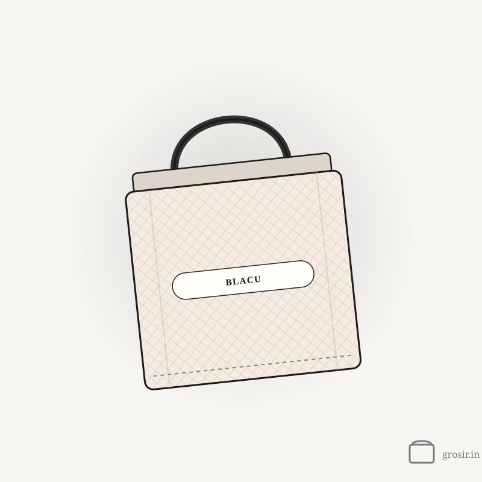
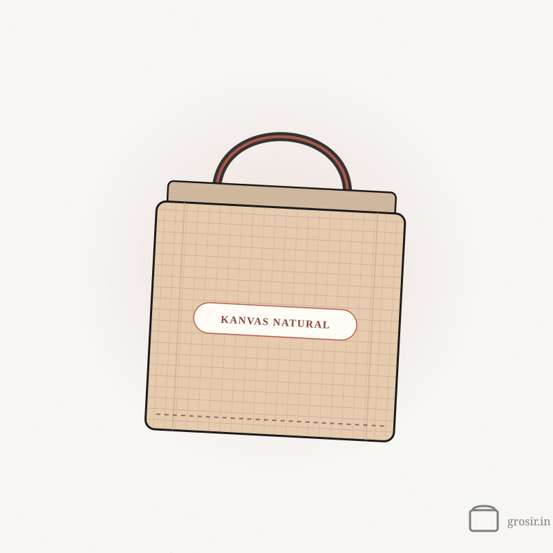

Tips sebelum kamu pesan totebag.
Panduan singkat soal bahan, cara cetak, ukuran, sampai persiapan goodie bag — supaya kamu bisa memutuskan dengan yakin sebelum produksi jalan.

Harga Totebag Custom: Rincian Biaya dan Cara Menghitungnya
Harga totebag custom itu harga tas polos ditambah biaya sablon per sisi. Begini cara menghitungnya, lengkap dengan contoh.

Grosir Totebag Polos: Pilih Bahan, Ukuran, dan Cara Pesannya
Totebag polos itu paling fleksibel — bisa dijual lagi, disablon sendiri, atau dipakai workshop. Begini cara memilih bahan dan ukurannya.

Panduan Memilih Bahan Totebag: Blacu, Kanvas, Taslan, atau Denim?
Lima bahan totebag yang paling sering dipesan — apa bedanya, dan mana yang paling pas untuk kebutuhanmu.

Sablon DTF vs Sublim: Mana yang Pas untuk Totebag Kamu?
Dua cara cetak yang kami pakai bekerja dengan cara yang sangat berbeda. Pahami bedanya sebelum desainmu dikunci.

Blacu vs Kanvas: Mana yang Pas untuk Totebag Polos?
Dua bahan totebag polos yang paling sering dicari. Bedanya ada di tebal, tampilan, dan harga — dan tiap kebutuhan punya jawabannya sendiri.

Ide Isi Goodie Bag Seminar: Paket Hemat sampai Premium
Tiga contoh paket goodie bag seminar untuk budget yang berbeda, plus isi yang jarang dipakai peserta dan sebaiknya dilewati.

Totebag Custom untuk Merchandise Kantor dan Hadiah Klien
Totebag termasuk merchandise kantor yang paling sering dipakai lagi. Begini memilih bahan, warna, dan desain supaya benar-benar dibawa ke mana-mana.

Ukuran Totebag yang Pas: Mulai dari Isinya, Bukan dari Tasnya
Ukuran yang salah bikin totebag cuma nganggur di rumah. Cara menentukannya dimulai dari isinya, bukan dari tasnya.

Checklist Goodie Bag Seminar: Urutan Kerja Supaya Tidak Mepet
Urutan kerja yang bikin goodie bag beres tanpa drama menjelang hari-H — dari menghitung jumlah sampai mengisi tasnya.

Cara Mencuci dan Merawat Totebag Kanvas Supaya Awet
Totebag custom itu media promosi yang ikut jalan-jalan. Perawatan sederhana bikin tetap layak dipakai — dan logonya tetap terlihat.
Masih bingung pilih bahan atau ukuran?
Ceritakan kebutuhan acara atau brand-mu, kami bantu pilihkan kombinasi yang paling pas.